Het doel van de applicatie Gelinkt Notuleren is om lokale besturen te ondersteunen bij het nakomen van de publicatieplicht vanaf 2019 — Decreet Lokaal Bestuur. Gelinkt Notuleren is deel van het project LBLOD. Meer informatie over LBLOD. Wat Gelinkt Notuleren voor u kan doen:
Opmaken en publiceren van agenda's, besluiten en notulen voor Lokale Besturen;
Online, veilig en authentiek bewaren van uw documenten.
Automatisch aanvullen van de mandatendatabank bij het publiceren van uw notulen.
Met het juiste niveau van beveiliging documenten (publiek) ter beschikking stellen.
Het is niet verplicht om Gelinkt Notuleren te gebruiken. Leveranciers kunnen de achterliggende functionaliteiten hergebruiken om in hun notuleringspakketten te integreren. Meer informatie voor softwareleveranciers
Denk even na voor u print! De bomen zullen u dankbaar zijn.
Om toegang te krijgen tot Gelinkt Notuleren, moet u als gebruiker gekend zijn in de gebruikersbeheer Gelinkt Ntouleren. De lokale beheerder die in elk bestuur aanwezig is kan u hier toegang tot geven. Meestal is dit de secretaris/algemeen directeur, griffier of iemand die door de organisatie werd aangeduid. U gaat dus best bij hen ten rade als u niet weet wie uw lokale beheerder is. Meer informatie over gebruikersbeheer.
Om optimaal gebruik te maken van de applicatie, gebruikt u best Chrome of Firefox.
Het kan echter dat bepaalde functionaliteiten niet (volledig) werken zoals het hoort. Mocht u dit opmerken, kunt u ons dit altijd laten weten via GelinktNotuleren@vlaanderen.be.
Voorpagina
Aanmelden verloopt via het gekende gebruikersbeheer Vlaanderen. Klik op de blauwe knop "meld u aan" om verder te gaan.
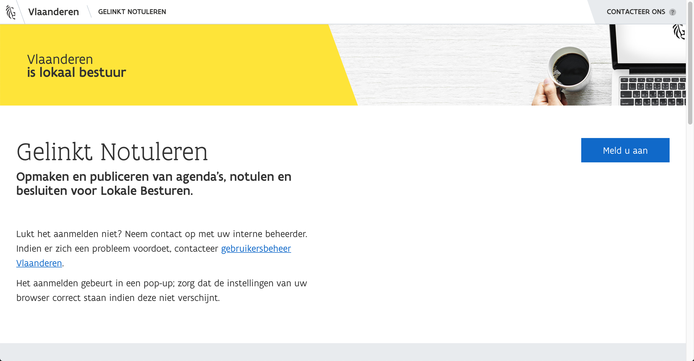
Pop-up
Vervolgens verschijnt er een popup, die u enkele veilige opties voorstelt om u mee aan te melden.
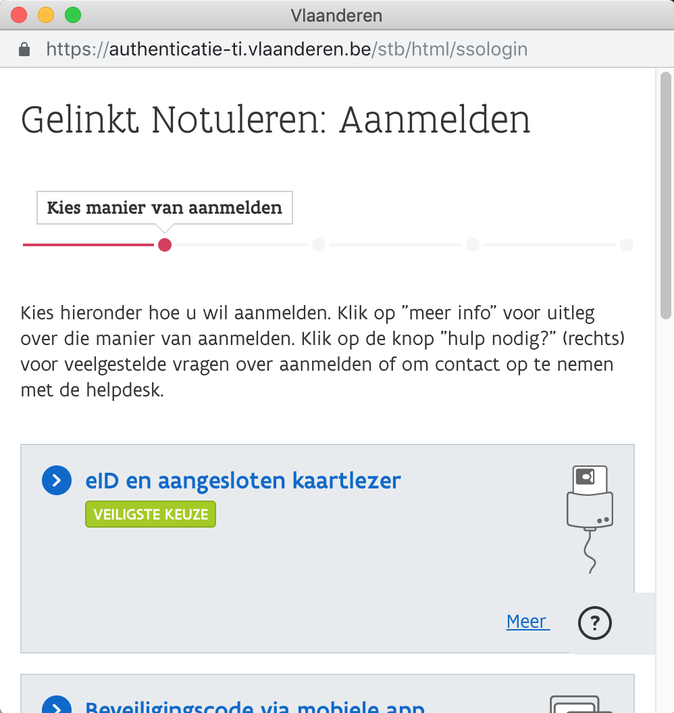
Verschijnt de popup niet? Zorg dat de instellingen van uw browser goed staan.
Indien u toegang wil aanvragen tot Gelinkt Notuleren, neem contact op met uw lokale beheerder. Indien er zich een probleem voordoet, bekijk de mogelijke problemen en hun oplossingen op gebruikersbeheer Vlaanderen. Vindt u daar het antwoord niet, neem contact op met 1700.
Documentoverzicht
Eens u aangemeld bent, krijgt u een overzicht van alle documenten. U zal nog geen documenten te zien krijgen.
U komt op het tabblad "ontwerpen" terecht. Daar vindt u al de notulen die in voorbereiding of in behandeling zijn.
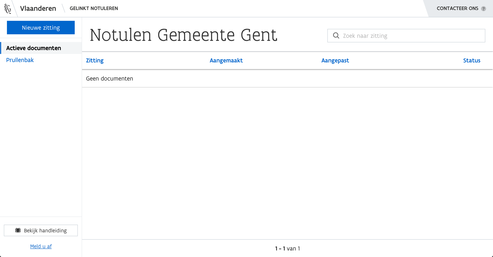
Eens notulen gepubliceerd en goedgekeurd zijn, komen ze in het tabblad "goedgekeurd" terecht.
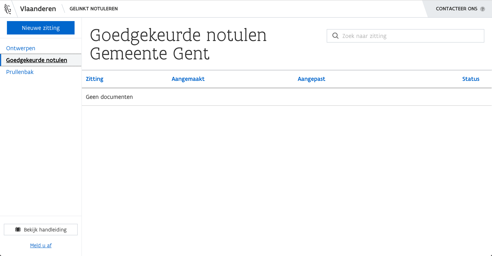
Concepten kunnen altijd verwijderd worden, en komen in de prullenbak terecht.
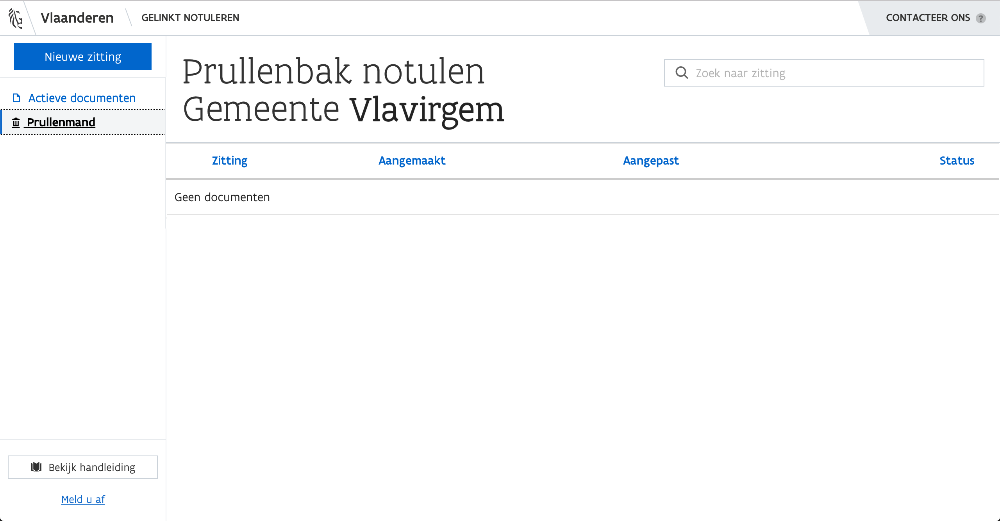
Eens een document wordt opgeslagen als concept, ziet u deze verschijnen in het overzicht.
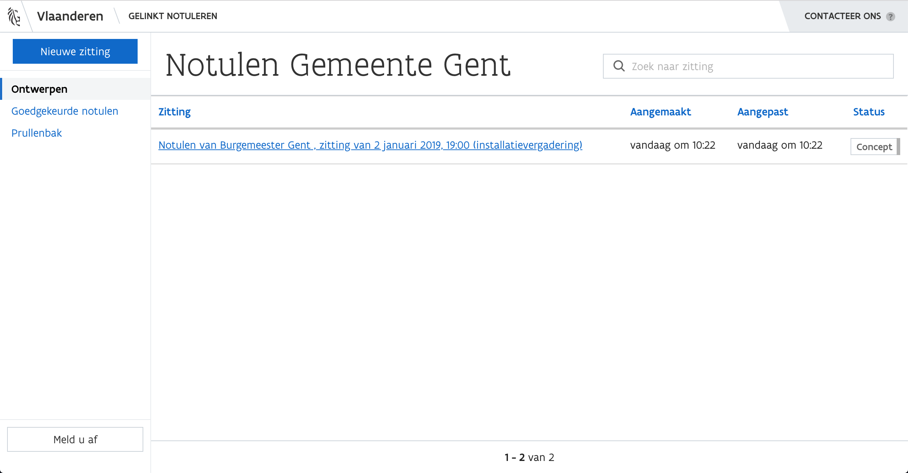
Indien u toegang wil aanvragen tot Gelinkt Notuleren, neem contact op met uw lokale beheerder Indien er zich een probleem voordoet, bekijk de mogelijke problemen en hun oplossingen op gebruikersbeheer Vlaanderen. Vindt u daar het antwoord niet, neem contact op met 1700.
Notuleren
Een nieuwe zitting starten
In het overzicht kan u met de knop bovenaan links een nieuwe zitting starten.
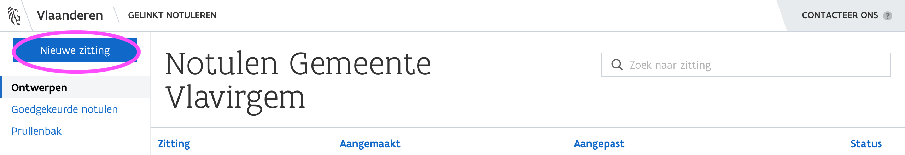
Deze actie opent de tekstverwerker, waar u aan de slag kan met het maken van uw notulen. Bewaar uw document regelmatig om uw notulen niet verloren te laten gaan.
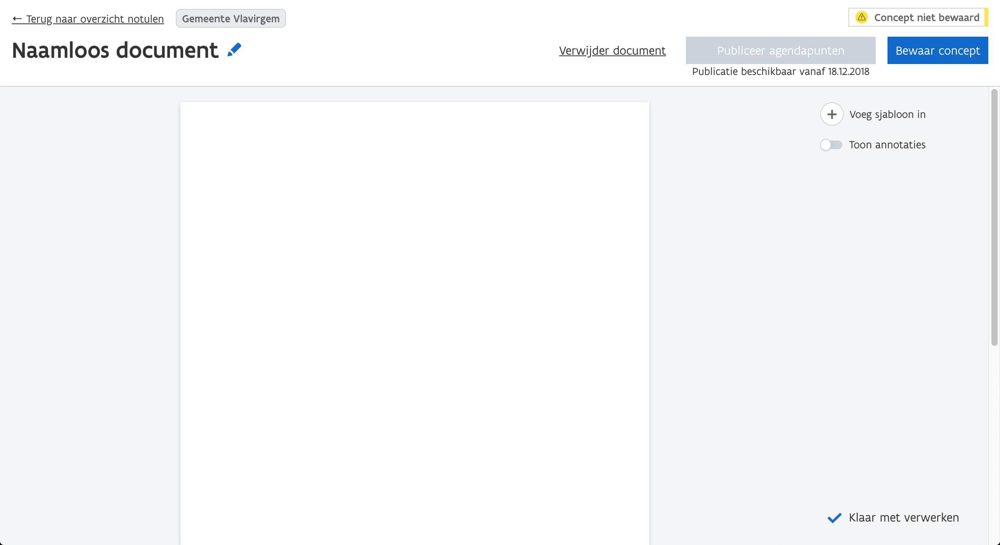
Geef de tekstverwerker de tijd om steeds de omgeving te laden, voor u begint met bewerken. De tekstverwerker interpreteert telkens de omgeving om nieuwe informatie op te halen zoals bijvoorbeeld besturen, en de verkozenen of mandatarissen die aan een bestuur verbonden zijn.
Een sjabloon invoegen
Eens de tekstverwerker geladen is, moedigen wij u aan om een sjabloon te kiezen.
De sjablonen zijn verrijkt met slimme links, die ervoor gaan zorgen dat de informatie die u ingeeft telkens op de juiste manier en naar de juiste plek doorstroomt bij publicatie. De mandaten die u bijvoorbeeld ingeeft kunnen dan automatisch doorstromen naar de mandatendatabank.
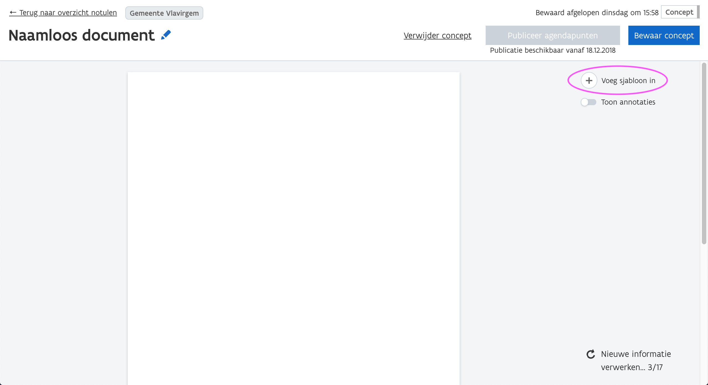
Voorlopig is er enkel het sjabloon "Installatievergadering" beschikbaar, in de klassieke stijl. Vanaf 18 december zijn er nieuwe sjablonen beschikbaar:
installatievergadering (nieuwe stijl)
politieraad (klassieke stijl)
politieraad (nieuwe stijl)
Eerste vergadering OCMW-raad (klassieke stijl)
Eerste vergadering OCMW-raad (nieuwe stijl)
Sjablonen en takenlijsten zijn er om u te helpen, maar u heeft het laatste woord
De sjablonen die we aanbieden zorgen ervoor dat de gelinkte informatie die u ingeeft op een correcte manier naar de juiste plaatsen doorstroomt. Ze zijn er ook om u te inspireren bij het vormen van uw besluiten.
U bent vrij om tekst aan te passen, maar zorg ervoor dat de structuur van het document telkens gerespecteerd blijft. U kan nagaan of dit in orde is door op Toon annotaties te klikken.
Het sjabloon invullen
Geef de tekstverwerker de tijd om deze nieuwe informatie in te laden en te interpreteren. Daarna kan u aan de slag.
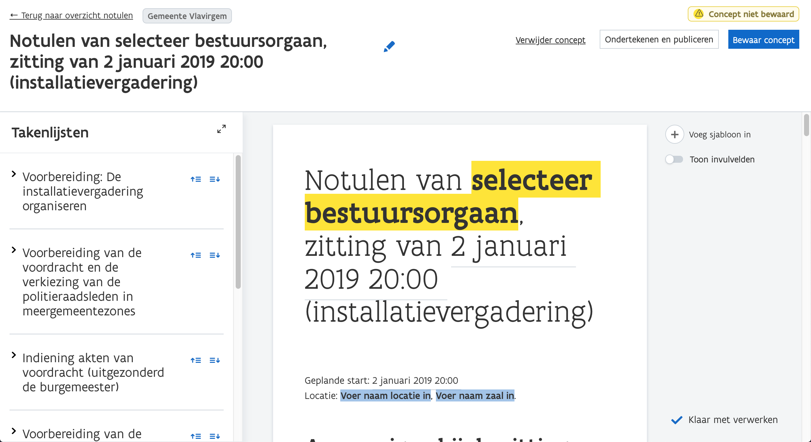
Takenlijst
Eens u een sjabloon heeft ingevoegd, verschijnt er ook een takenlijst die u helpt om het sjabloon te vervolledigen. Klik op de titels om de taken te vervolledigen, en vink het selectievakje aan eens u de taak heeft vervolledigd. Deze informatie wordt bijgehouden.
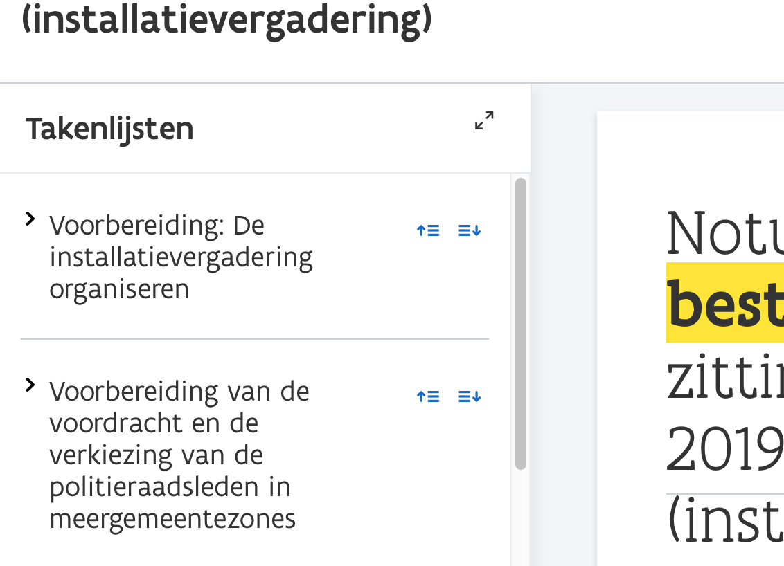
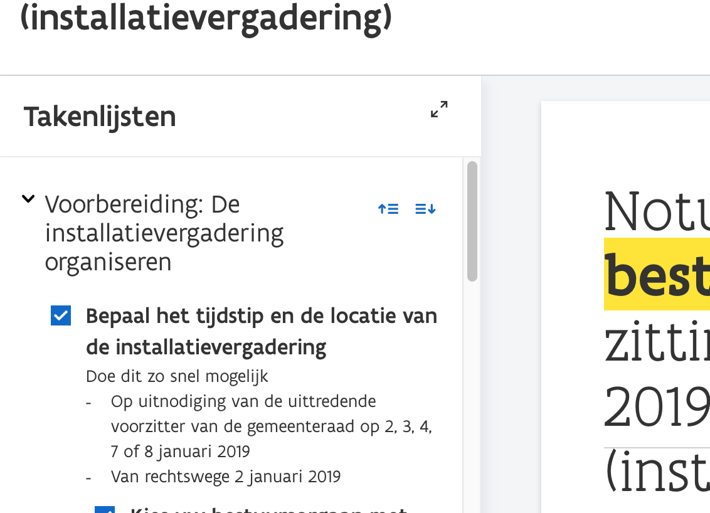
Gele en blauwe tekstblokken
In het sjabloon verschijnen er gele en blauwe tekstblokken die ingevuld dienen te worden.
Indien u op een gele tekstblok klikt, krijg u suggesties om in te vullen.
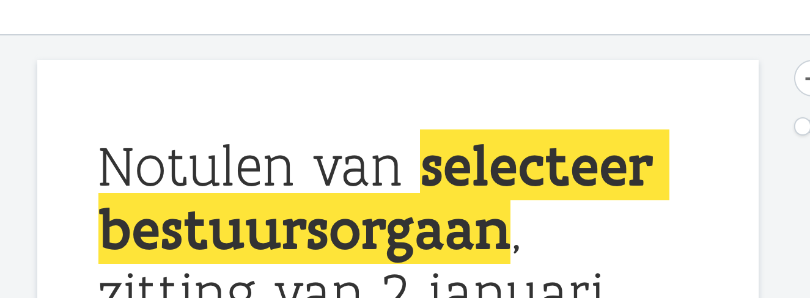
In de blauwe tekstblokken kan u manueel informatie toevoegen.
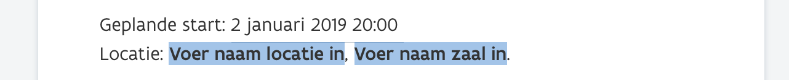
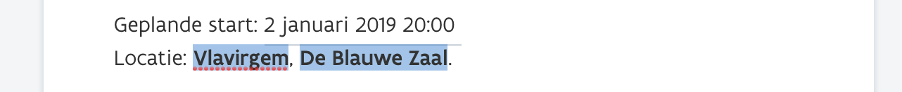
Klik op "Toon annotaties" om te zien welke informatie gelinkt is, en gepubliceerd zal worden.
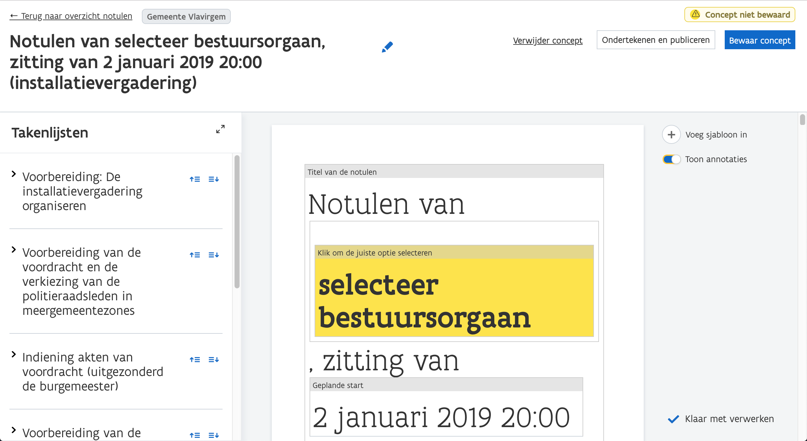
Aan de slag
We moedigen u aan om te oefenen met de editor. Start gerust enkele nieuwe zittingen. Zolang u niet publiceert, komt de informatie niet online te staan. Concepten kan u steeds verwijderen. De takenlijst aan de zijkant helpt u om uw notulen goed op te stellen en de juiste stappen te ondernemen. Refereer voor de installatievergadering zeker ook naar het draaiboek van de VVSG: http://www.vvsg.be/verkiezingen/Pages/default.aspx.
U bent eigenaar van en verantwoordelijk voor uw notulen en publicaties. Wij bieden u deze sjablonen aan ter ondersteuning, en moedigen u aan om alles na te kijken. Pas aan waar nodig.
Zoek de gele tekst in de template, en klik er op om met behulp van onze kaartjes de juiste informatie te selecteren.
Zoek vervolgens de blauwe tekst, en pas de tekst hierin manueel aan.
Vanaf 18 december kan u agendapunten publiceren.
Om uit de tekstverwerker te gaan, bewaar uw document, en klik linksboven op Terug naar overzicht notulen.
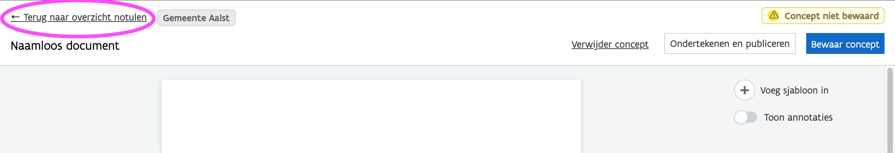
Deze handleiding wordt constant aangevuld. Kom zeker terug om de nieuwe functionaliteiten te ontdekken.
Publiceren
Hoe gaat het in zijn werk?
Publiceren
U kan uw agenda, besluitenlijst en notulen publiceren. Er wordt telkens een voorbeeld getoond van wat u exact gaat publiceren. U beslist zelf wanneer dat gebeurt, maar hou rekening met de termijnen.
Hieronder een voorbeeld van publicatie voor uw agenda.
De tekstverwerker herkent automatisch de juiste mandatarissen in uw besluiten;
maak gebruik van sjablonen voor het wijzigen van mandaten;
wijzigingen in mandaten worden bij publicatie automatisch up-to-date gebracht in de mandatendatabank.
Installatievergadering
Draaiboek installatievergadering
VVSG heeft voor de installatievergadering een draaiboek gemaakt. Op deze link vindt u de laatste versie van het draaiboek terug, samen met andere informatie: http://www.vvsg.be/verkiezingen/Pages/default.aspx.
Dit draaiboek zal u helpen om de installatie vlot te laten verlopen.
Eens u de template "Installatievergadering" invoegt, verschijnt er een takenlijst aan de linkerkant die u helpt voor en tijdens de zitting. Deze takenlijst is ook gebaseerd op het draaiboek van de VVSG.
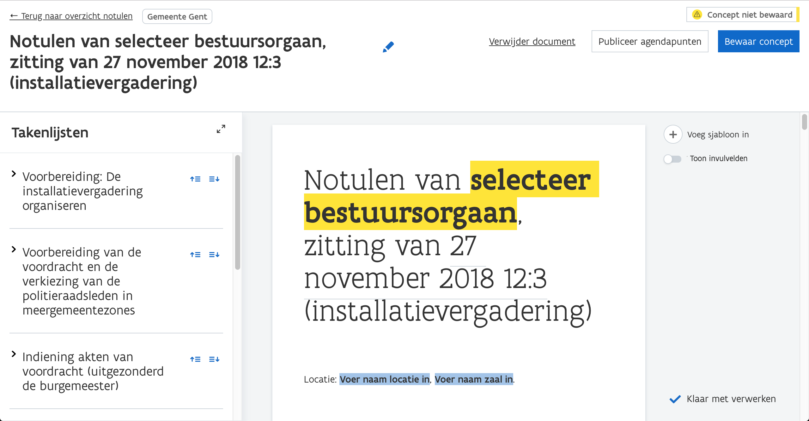
Gebruikersbeheer
Om toegang te krijgen tot Gelinkt Notuleren, moet u de nodige toegangsrechten gekregen hebben via het gebruikers- en toegangsbeheer. Dit gebeurt door de lokale beheerder die in elk bestuur aanwezig is. Meestal is dit de secretaris/algemeen directeur, griffier of iemand die door de organisatie werd aangeduid. U gaat dus best bij hen ten rade als u niet weet wie uw lokale beheerder is.
Aanmelden en navigeren
Om als lokale beheerder rechten toe te kennen aan gebruikers, surft u naar https://vo-gebruikersbeheer.vlaanderen.be. Meld u aan met uw favoriete aanmeldingssysteem.
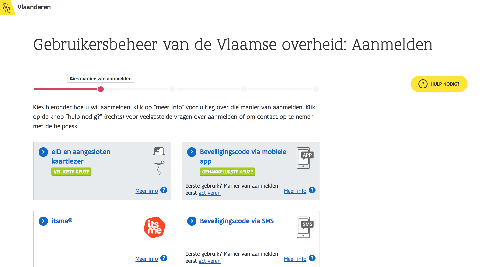
Kies vervolgens de juiste doelgroep, en het bestuur waar u zich voor wil aanmelden.
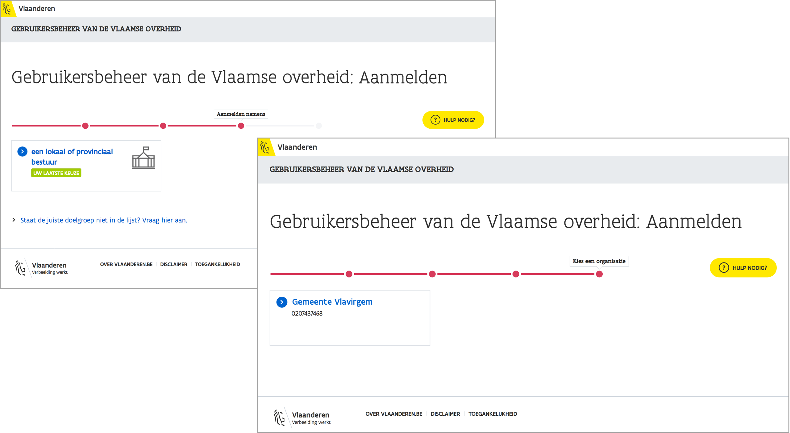
Klik op 'snel rechten toekennen', om te starten.
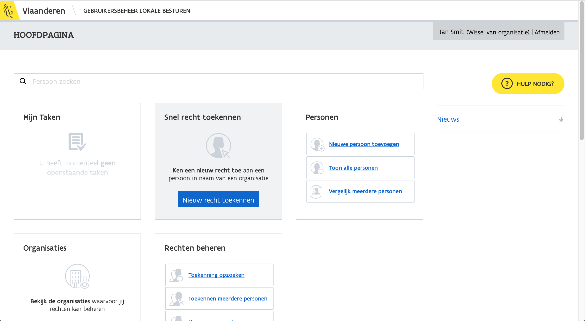
Zoeken naar de juiste persoon
U krijgt een overzicht te zien, waar u kan zoeken naar de juiste persoon.
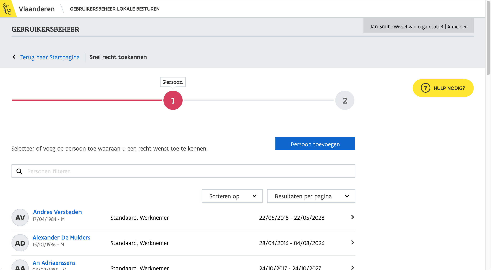
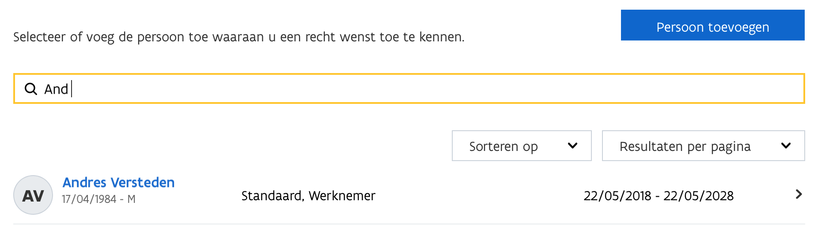
Zoeken naar de juiste rechten
Vervolgens kan u voor de geselecteerde persoon de juiste rechten zoeken. Zoek naar "Gelinkt Notuleren".
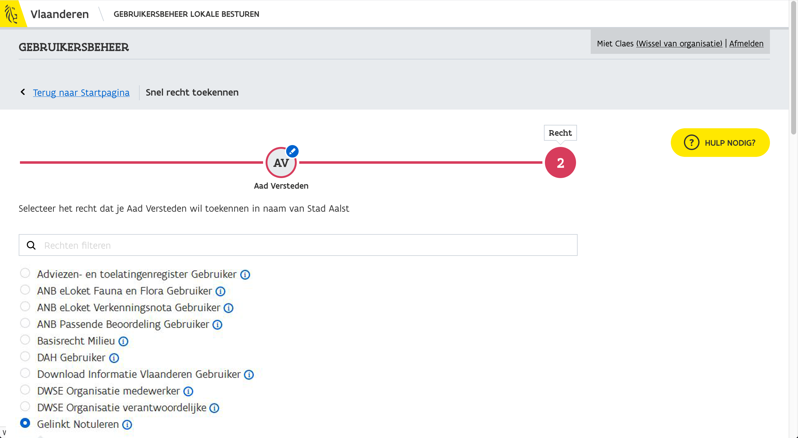
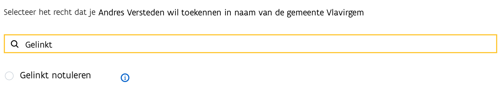
Rechten toekennen
Klik op "Gelinkt Notuleren" om rechten toe te kennen. Dit gebeurt op basis van context (niet meer op basis van rol zoals vroeger).
U kan een gebruiker tot bepaalde onderdelen van de applicatie toegang verlenen of ontkennen aan de hand van die contexten. Eens een gebruiker toegang heeft tot een bepaalde context, kan deze gebruiker alle acties uitvoeren voor de bijbehorende onderdelen. Een gebruiker kan rechten krijgen voor meerdere contexten.
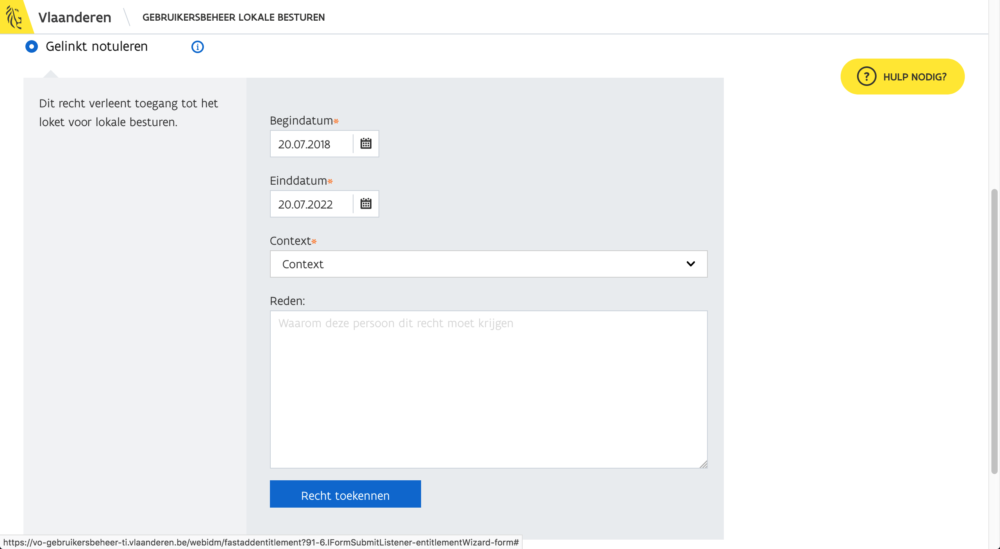
Er zijn 4 profielenvoor deze applicatie:
Ondertekenaar
Publiceerder
Schrijver
Sjablonen valideerder
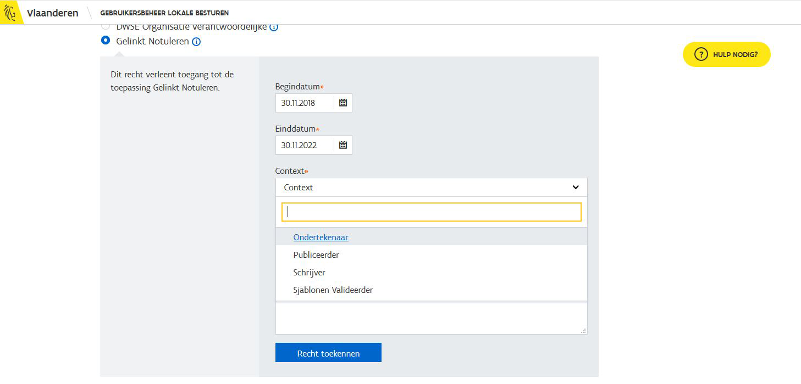
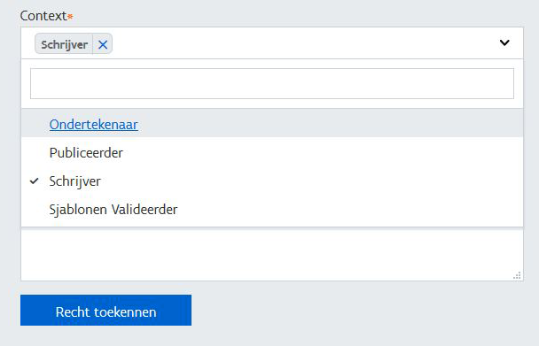
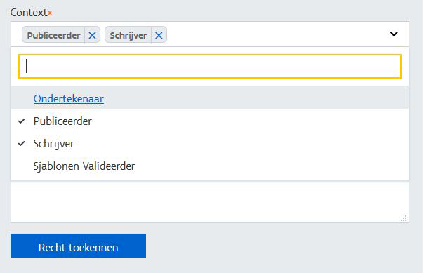
Geef ook een reden op om het recht toe te kennen.
Voltooien
U wordt gevraagd om het toekennen van rechten te bevestigen, waarna een boodschap verschijnt indien het proces met succes voltooid werd.